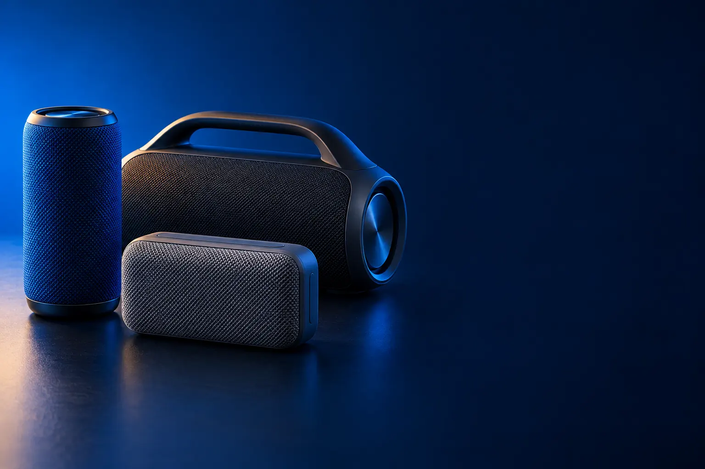

PORTÁTIL BLUETOOTH
Melhor caixa de som Bluetooth portátil custo-benefício
Para levar na mochila, na praia e no banho. À prova d'água e com bateria para o dia todo.

Melhor custo-benefício portátilAnker soundcore 2
CURADORIA TECHAPROVADO · 2026
A caixinha do banho, a amplificada do churrasco e o monitor da mesa do computador são produtos diferentes. Separamos 18 modelos em 3 perfis, do custo-benefício ao top de linha, e dizemos para quem cada um vale a pena.

NOSSA LEITURA
Os watts anunciados confundem mais que ajudam. Escolha primeiro onde a caixa vai tocar: no bolso, no quintal ou na mesa. O resto da ficha faz sentido depois disso.
COMECE POR AQUI
PORTÁTIL BLUETOOTH
Para levar na mochila, na praia e no banho. À prova d'água e com bateria para o dia todo.
POTENTE PARA FESTA
Para animar o churrasco e o quintal. Potência, graves e luzes no ritmo da música.

PARA PC E MESA
Para o computador, a TV pequena ou ouvir música na mesa, com som melhor que o do notebook.

A FICHA, TRADUZIDA
01 - POTÊNCIA (W)
Potência é medida em watts (W). O número que importa é o RMS, a potência contínua que a caixa entrega sem distorcer. Muitas marcas anunciam a potência de pico, um número bem maior que só aparece por instantes.
Para ouvir de perto, 5 a 12 W bastam. Para um quintal ou churrasco, de 25 a 100 W. Para festa com muita gente, acima de 150 W RMS.
Dobrar os watts não dobra o volume que você ouve: o ouvido percebe bem menos diferença. Por isso, tamanho do alto-falante e qualidade do grave pesam tanto quanto o número.
02 - PROTEÇÃO (IP)
O código IP diz quanto a caixa resiste à poeira e à água. O primeiro número é poeira (6 é proteção total); o segundo é água: 4 aguenta respingo, 5 e 6 jatos de água, 7 submersão rápida e 8 submersão mais longa.
Para banheiro e beira de piscina, IPX7 ou IP67 dá tranquilidade. Para usar só dentro de casa, a proteção não é necessária.
As amplificadas de festa e as caixas de mesa quase nunca são à prova d'água: mantenha longe da piscina e da chuva.
03 - BATERIA
A duração anunciada (12, 20, 24 horas) é medida em volume médio. No volume máximo, a bateria dura bem menos, às vezes metade.
Para o dia a dia, 12 horas sobram. Para fim de semana sem tomada, procure 24 horas ou mais. Algumas JBL têm o Playtime Boost, que estica a bateria ajustando o som.
As caixas de mesa (PC e monitores de áudio) ficam na tomada e não têm bateria.
04 - CONEXÕES
O Bluetooth liga o celular sem fio. Para PC e TV, as entradas com cabo (P2, RCA, óptica) evitam atraso no som e não dependem de pareamento.
TWS, Auracast e PartyBoost são nomes para ligar duas ou mais caixas tocando juntas. Funciona só entre caixas compatíveis, em geral da mesma marca.
Nas caixas de festa, entrada para microfone e guitarra faz diferença para karaokê. Nos monitores de mesa, a entrada óptica liga direto na TV.
05 - ESTÉREO E SUBWOOFER
Som estéreo usa dois canais, esquerdo e direito, para dar sensação de espaço. As caixinhas portáteis pequenas costumam ser mono; as de mesa vêm em par para isso.
O subwoofer é um alto-falante só para o grave. Sistemas 2.1 (duas caixas e um sub) dão grave cheio em filme e jogo sem precisar de volume alto.
Monitor de áudio é a caixa feita para soar "neutra", sem exagerar o grave: é a escolha de quem ouve muita música ou produz conteúdo.
A CURADORIA EM DETALHE
18 modelos da pesquisa
PERFIL · 6 MODELOS, DA ENTRADA AO TOP DE LINHA
A caixinha que vai com você: piscina, praia, churrasco e banheiro. O que pesa aqui é aguentar água, durar o dia todo longe da tomada e caber na mochila. A escada vai da mini de alça até a grande de ombro, que vira carregador de celular.

POR DENTRO DA ESCOLHA
Pequena, com alça e à prova d'água e poeira (IP67): aguenta submersão e até flutua na piscina. São 20 horas de bateria e 5 W de som.
Entrega muita bateria e resistência pelo preço.
| Potência | 5 W |
|---|---|
| Bateria | Até 20 h |
| Proteção | IP67, flutua |
| Formato | Mini com alça |
Fonte: ficha e descrição do anúncio, conferidas em 02/11/2026. Dados informados pelo fabricante.
PORTÁTIL · CUSTO-BENEFÍCIO 2 de 6
Melhor custo-benefício portátil
12 W estéreo · BassUp · 24 h
Ver preço na AmazonPOR DENTRO DA ESCOLHA
Som estéreo de 12 W com dois alto-falantes de neodímio e a tecnologia BassUp, que reforça os graves. Bateria de até 24 horas e proteção IPX7 contra água.
O salto sobre a Select 4 Go é o som estéreo e mais forte.
| Potência | 12 W estéreo |
|---|---|
| Graves | BassUp |
| Bateria | Até 24 h |
| Proteção | IPX7 |
Fonte: ficha e descrição do anúncio, conferidas em 02/11/2026. Dados informados pelo fabricante.

PORTÁTIL · ALTERNATIVA 3 de 6
Outro caminho: com mosquetão
Mosquetão · IP67 · até 15 h
Ver preço na AmazonPOR DENTRO DA ESCOLHA
O som JBL com mosquetão integrado para prender em mochila, bicicleta ou cinto. À prova d'água e poeira (IP67), até 12 horas de música, mais 3 com o Playtime Boost, e Auracast para juntar com outras JBL.
Não é um degrau acima da soundcore 2, é outro formato.
| Bateria | Até 12 h + 3 h (Playtime Boost) |
|---|---|
| Proteção | IP67 |
| Formato | Com mosquetão |
| Conexão | Bluetooth, Auracast |
Fonte: ficha e descrição do anúncio, conferidas em 02/11/2026. Dados informados pelo fabricante.

POR DENTRO DA ESCOLHA
O tamanho que mais equilibra som e transporte: 25 W, AI Sound Boost (que ajusta o som à música em tempo real), IP68 contra água e poeira, resistência a quedas e até 16 horas de bateria.
A Flip é a caixa média mais conhecida. A versão 7 ganhou IP68 e o AI Sound Boost.
| Potência | 25 W RMS |
|---|---|
| Bateria | Até 16 h |
| Proteção | IP68, resiste a quedas |
| Extras | AI Sound Boost, Auracast |
Fonte: ficha e descrição do anúncio, conferidas em 02/11/2026. Dados informados pelo fabricante.

POR DENTRO DA ESCOLHA
Mais grave e mais bateria que a Flip: 30 W, 24 horas com uma carga (mais 4 com o Playtime Boost), IP68 com resistência a quedas e Auracast para parear com outra Charge 6.
O degrau sobre a Flip 7 é a bateria quase dobrada e mais potência. Para uso em casa, a Flip basta.
| Potência | 30 W RMS |
|---|---|
| Bateria | 24 h + 4 h |
| Proteção | IP68, resiste a quedas |
| Conexão | Bluetooth, Auracast |
Fonte: ficha e descrição do anúncio, conferidas em 02/11/2026. Dados informados pelo fabricante.

PORTÁTIL · TOP DE LINHA 6 de 6
Top de linha portátil
2 woofers · 24 h + 6 h · powerbank
Ver preço na AmazonPOR DENTRO DA ESCOLHA
A maior que ainda é portátil: dois woofers, dois tweeters e graves duplos, até 24 horas de bateria (mais 6 com o Playtime Boost), alça de ombro e saída para carregar o celular.
Fica no meio do caminho entre a portátil e a caixa de festa. Se você vai ficar parado no quintal, uma amplificada entrega mais som pelo mesmo preço.
| Alto-falantes | 2 woofers + 2 tweeters |
|---|---|
| Bateria | 24 h + 6 h |
| Proteção | IP67 |
| Extras | Powerbank, alça de ombro, Auracast |
Fonte: ficha e descrição do anúncio, conferidas em 02/11/2026. Dados informados pelo fabricante.
PERFIL · 6 MODELOS, DA ENTRADA AO TOP DE LINHA
Para quem quer som alto e grave forte: churrasco, quintal, festa de família. As caixas amplificadas têm alça e rodinhas ou bateria, entrada para microfone e luzes. A escada vai das amplificadas de entrada às PartyBox da JBL.

POR DENTRO DA ESCOLHA
Caixa amplificada de 150 W RMS com bateria recarregável, Bluetooth e TWS para ligar duas CM-150 juntas, sem fio.
É o jeito mais barato de ter som alto de verdade.
| Potência | 150 W RMS |
|---|---|
| Bateria | Recarregável |
| Conexão | Bluetooth, TWS |
| Voltagem | Bivolt |
Fonte: ficha e descrição do anúncio, conferidas em 02/11/2026. Dados informados pelo fabricante.
FESTA · CUSTO-BENEFÍCIO 2 de 6
Melhor custo-benefício para festa
400 W RMS · luzes · bateria · TWS
Ver preço na AmazonPOR DENTRO DA ESCOLHA
A amplificada da seleção: 400 W RMS, luzes, bateria recarregável e TWS para parear duas caixas.
Mais que dobra a potência da CM-150.
| Potência | 400 W RMS |
|---|---|
| Luzes | Sim |
| Bateria | Recarregável |
| Conexão | Bluetooth, TWS |
| Voltagem | Bivolt |
Fonte: ficha e descrição do anúncio, conferidas em 02/11/2026. Dados informados pelo fabricante.

FESTA · INTERMEDIÁRIO 3 de 6
2 woofers de 8" · microfone e guitarra · luzes
Ver preço na AmazonPOR DENTRO DA ESCOLHA
Dois woofers de 8 polegadas e dois tweeters de 3 polegadas para graves fundos e voz clara. Tem Bluetooth 5.4, TWS, USB, entrada auxiliar e entrada para microfone ou guitarra, além de luzes LED.
O diferencial é a entrada para microfone e guitarra e o som mais definido de duas vias.
| Alto-falantes | 2 woofers de 8" + 2 tweeters de 3" |
|---|---|
| Entradas | Bluetooth 5.4, USB, AUX, microfone/guitarra |
| Luzes | LED |
| Alimentação | Tomada |
Fonte: ficha e descrição do anúncio, conferidas em 02/11/2026. Dados informados pelo fabricante.

FESTA · AVANÇADO 4 de 6
200 W RMS · 3 vias · 30 h · IP66
Ver preço na AmazonPOR DENTRO DA ESCOLHA
Sistema de 3 vias (subwoofer, médios e agudos) com 200 W RMS, radiadores passivos laterais, até 30 horas de bateria e proteção IP66 contra jatos de água.
Junta potência de festa com bateria de portátil.
| Potência | 200 W RMS |
|---|---|
| Sistema | 3 vias |
| Bateria | Até 30 h |
| Proteção | IP66 |
Fonte: ficha e descrição do anúncio, conferidas em 02/11/2026. Dados informados pelo fabricante.

FESTA · ALTERNATIVA 5 de 6
Outro caminho: show de luzes JBL
100 W RMS · luzes · 15 h · Auracast
Ver preço na AmazonPOR DENTRO DA ESCOLHA
A PartyBox compacta da JBL: 100 W RMS com AI Sound Boost, show de luzes no ritmo da música, até 15 horas de bateria e Auracast para parear com outras JBL.
Não é um degrau acima da AIWA em potência, é a troca por marca, luzes e acabamento JBL.
| Potência | 100 W RMS |
|---|---|
| Bateria | Até 15 h |
| Luzes | Show de luzes |
| Conexão | Bluetooth, Auracast |
Fonte: ficha e descrição do anúncio, conferidas em 02/11/2026. Dados informados pelo fabricante.

FESTA · TOP DE LINHA 6 de 6
Top de linha para festa
160 W RMS · luzes · 12 h · alça dobrável
Ver preço na AmazonPOR DENTRO DA ESCOLHA
O topo da seleção: 160 W RMS com JBL Pro Sound, show de luzes, AI Sound Boost, até 12 horas de bateria e alça dobrável.
Mais potência e luzes mais elaboradas que a Encore Essential 2.
| Potência | 160 W RMS |
|---|---|
| Bateria | Até 12 h |
| Luzes | Show de luzes |
| Extras | AI Sound Boost, alça dobrável |
Fonte: ficha e descrição do anúncio, conferidas em 02/11/2026. Dados informados pelo fabricante.
PERFIL · 6 MODELOS, DA ENTRADA AO TOP DE LINHA
Caixas para ficar paradas na mesa, ligadas no computador, no notebook ou na TV. Começam nas caixinhas USB e vão até os monitores de áudio de madeira, com graves cheios e Bluetooth para o celular.

POR DENTRO DA ESCOLHA
O par de caixinhas mais simples: liga na USB para energia e no P2 para o som, com blindagem eletromagnética para não dar chiado perto do monitor.
Para música de verdade, suba alguns degraus.
| Tipo | 2.0 |
|---|---|
| Energia | USB |
| Áudio | P2 (3,5 mm) |
| Blindagem | Eletromagnética |
Fonte: ficha e descrição do anúncio, conferidas em 02/11/2026. Dados informados pelo fabricante.
PC E MESA · CUSTO-BENEFÍCIO 2 de 6
Melhor custo-benefício para PC
2.0 gamer · RGB · USB e P2
Ver preço na AmazonPOR DENTRO DA ESCOLHA
Par de caixas com iluminação RGB personalizável, design quadrado e conexão por USB e P2. Funciona no PC, na TV, no notebook e no celular.
O som é bem mais cheio que o das caixinhas USB básicas.
| Tipo | 2.0 |
|---|---|
| Luz | RGB |
| Conexão | USB e P2 |
| Medidas | 19 x 17 x 11 cm |
Fonte: ficha e descrição do anúncio, conferidas em 02/11/2026. Dados informados pelo fabricante.

PC E MESA · INTERMEDIÁRIO 3 de 6
Subwoofer de 3" · 15 W RMS · MDF
Ver preço na AmazonPOR DENTRO DA ESCOLHA
Sistema 2.1: duas caixinhas e um subwoofer de MDF com woofer de 3 polegadas, para graves de verdade. 15 W RMS, entrada P2 e alimentação bivolt.
O subwoofer é o que muda tudo em relação às 2.0 do mesmo preço.
| Tipo | 2.1 com subwoofer |
|---|---|
| Potência | 15 W RMS |
| Material | MDF |
| Entrada | P2 |
| Voltagem | Bivolt |
Fonte: ficha e descrição do anúncio, conferidas em 02/11/2026. Dados informados pelo fabricante.

POR DENTRO DA ESCOLHA
O primeiro monitor de áudio da escada: caixas de madeira com 24 W RMS e entradas RCA, para música com som equilibrado e grave natural.
Monitor de áudio reproduz o som com menos "maquiagem" que as caixas comuns.
| Tipo | Monitor de áudio 2.0 |
|---|---|
| Potência | 24 W RMS |
| Entradas | RCA |
| Voltagem | Bivolt |
Fonte: ficha e descrição do anúncio, conferidas em 02/11/2026. Dados informados pelo fabricante.

PC E MESA · AVANÇADO 5 de 6
42 W RMS · 2 entradas RCA · controle remoto
Ver preço na AmazonPOR DENTRO DA ESCOLHA
O monitor de mesa da seleção: 42 W RMS sem distorção, duas entradas RCA (PC e outro aparelho ao mesmo tempo) e acabamento de madeira.
Quase o dobro da potência da R980T.
| Tipo | Monitor de áudio 2.0 |
|---|---|
| Potência | 42 W RMS |
| Entradas | 2 RCA |
Fonte: ficha e descrição do anúncio, conferidas em 02/11/2026. Dados informados pelo fabricante.

PC E MESA · TOP DE LINHA 6 de 6
Top de linha para PC e mesa
42 W · Bluetooth · óptica e coaxial
Ver preço na AmazonPOR DENTRO DA ESCOLHA
A R1280T com Bluetooth e entradas digitais (óptica e coaxial), além de duas RCA. Liga na TV pela óptica e no celular pelo Bluetooth, com controles na lateral.
O mesmo som da R1280T, com conexões para tudo.
| Tipo | Monitor de áudio 2.0 |
|---|---|
| Potência | 42 W |
| Conexões | Bluetooth, óptica, coaxial, 2 RCA |
| Voltagem | Bivolt |
Fonte: ficha e descrição do anúncio, conferidas em 02/11/2026. Dados informados pelo fabricante.
Nenhum modelo encontrado. Tente outro termo ou volte para Todos.
LADO A LADO
| Modelo | Perfil | Posição | Potência | Destaque |
|---|---|---|---|---|
| soundcore Select 4 Go | Portátil | Entrada | 5 W | IP67 · flutua · 20 h de bateria |
| Anker soundcore 2 | Portátil | Custo-benefício | 12 W estéreo | 12 W estéreo · BassUp · 24 h |
| JBL Clip 5 | Portátil | Alternativa | Até 12 h + 3 h (Playtime Boost) | Mosquetão · IP67 · até 15 h |
| JBL Flip 7 | Portátil | Intermediário | 25 W RMS | 25 W · IP68 · AI Sound Boost |
| JBL Charge 6 | Portátil | Avançado | 30 W RMS | 30 W · 24 h + 4 h · IP68 |
| JBL Xtreme 4 | Portátil | Top de linha | 24 h + 6 h | 2 woofers · 24 h + 6 h · powerbank |
| Mondial CM-150 | Festa | Entrada | 150 W RMS | 150 W RMS · bateria · TWS |
| Mondial Connect Lights CM-400 | Festa | Custo-benefício | 400 W RMS | 400 W RMS · luzes · bateria · TWS |
| Philips Party Speaker TAX4000 | Festa | Intermediário | 2 woofers de 8" · microfone e guitarra · luzes | |
| AIWA Boombox Plus BBS-01 | Festa | Avançado | 200 W RMS | 200 W RMS · 3 vias · 30 h · IP66 |
| JBL PartyBox Encore Essential 2 | Festa | Alternativa | 100 W RMS | 100 W RMS · luzes · 15 h · Auracast |
| JBL PartyBox Club 120 | Festa | Top de linha | 160 W RMS | 160 W RMS · luzes · 12 h · alça dobrável |
| C3Tech SP-301 | PC e mesa | Entrada | 2.0 | 2.0 · USB e P2 · blindagem |
| Redragon Anvil RGB | PC e mesa | Custo-benefício | 2.0 | 2.0 gamer · RGB · USB e P2 |
| Edifier X100B 2.1 | PC e mesa | Intermediário | 15 W RMS | Subwoofer de 3" · 15 W RMS · MDF |
| Edifier R980T | PC e mesa | Avançado | 24 W RMS | Monitor de áudio · 24 W RMS · RCA |
| Edifier R1280T | PC e mesa | Avançado | 42 W RMS | 42 W RMS · 2 entradas RCA · controle remoto |
| Edifier R1280DB | PC e mesa | Top de linha | 42 W | 42 W · Bluetooth · óptica e coaxial |
CONSIDERAÇÕES FINAIS
Os tops de linha (JBL Xtreme 4, JBL PartyBox Club 120 e Edifier R1280DB) fazem sentido para quem usa muito a caixa ou quer marca e conexões completas. Para o dia a dia, os custo-benefício resolvem.
Portátil, a Anker soundcore 2. Para festa, a Mondial Connect Lights CM-400. Para o computador, a Redragon Anvil.
Vale pelo som equilibrado, pela resistência e pela facilidade de ligar várias caixas. Muitas são vendidas por lojas parceiras: confira o vendedor.
Para ouvir de perto, 5 a 12 W RMS. Para quintal e churrasco, de 25 a 100 W RMS. Para festa grande, acima de 150 W RMS.
Proteção total contra poeira (6) e resistência a submersão rápida em água (7). É o nível ideal para piscina e praia.
Porque ele muda várias vezes por dia. Usamos o preço só para montar a escada de cada perfil; o botão leva ao valor atualizado na loja.
TRANSPARÊNCIA EDITORIAL
Separamos os perfis pelo que as pessoas mais procuram: portátil, potente para festa e para PC e mesa. Cada modelo precisa responder com clareza "para quem ele é o certo".
Em cada perfil há modelos em faixas de preço diferentes, e cada degrau precisa entregar algo que o anterior não entrega. Dois modelos com a mesma proposta não entram juntos.
Ficha e especificações foram conferidas nos anúncios das lojas em 02/11/2026.
Os links de compra desta página são de afiliado: se você comprar por eles, o TechAprovado pode ganhar uma comissão, sem custo adicional para você. Isso não muda a ordem nem a escolha dos produtos.
📲 GUIAS E DICAS NO SEU FEED
Dicas práticas antes de comprar, em carrosséis e vídeos curtos, sempre com link para o guia completo.